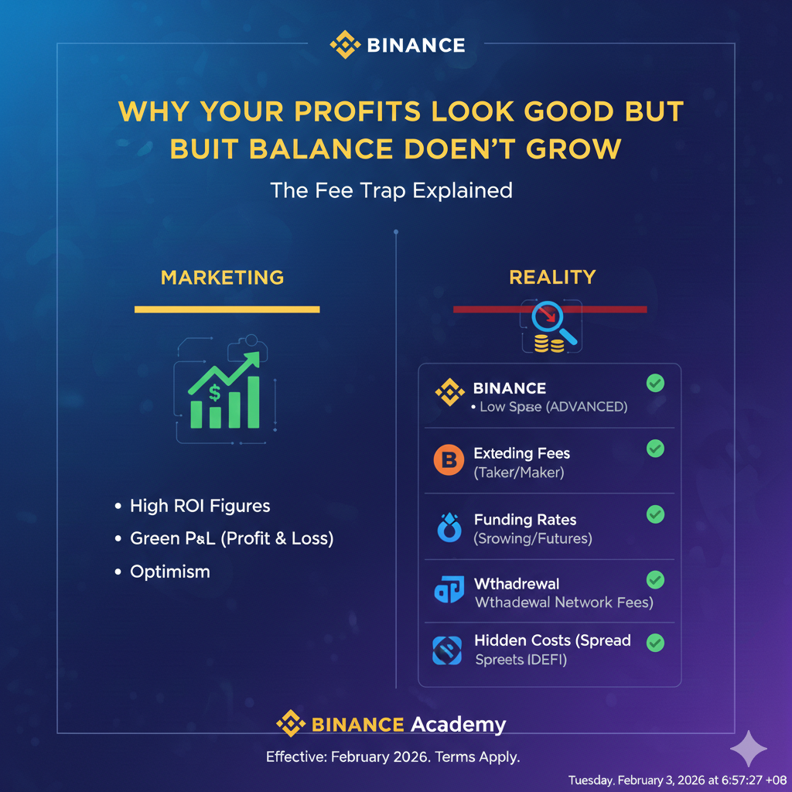

Why Your Profits Look Good but Your Balance Doesn’t Grow (The 2026 Fee Trap)
It’s the most frustrating experience in crypto: your trading journal shows a 60% win rate, your "Closed PnL" is green, yet your wallet balance remains stubbornly flat—or worse, it’s shrinking.
In 2026, as exchanges have become more sophisticated, they’ve mastered the art of micro-bleeding. By spreading costs across several small categories, they ensure you feel like a winner while they collect the prize. Here is how to identify and escape the "Fee Trap."
1. Death by a Thousand Cuts
Most traders only look at the "Trading Fee" on their receipt. In reality, your balance is fighting a four-front war:
- The Maker/Taker Fee: The obvious cost.
- The Bid-Ask Spread: The "hidden" markup on the price.
- The Network Withdrawal Fee: The cost to move your "winnings" to safety.
- Funding/Interest Fees: The hourly cost of holding a leveraged position.
2. The Math: How 0.1% Becomes 20%
Let’s say you have $1,000 and you trade once a day. If your exchange charges 0.1% per trade, you might think you’re losing 0.1% of your wealth.
The Reality: Every trade has an entry and an exit (0.2% total). Over 30 days, you’ve churned your capital 30 times. That is 6% of your entire portfolio gone in a month just to "stay in the game." If your strategy only yields 5% monthly profit, you are actually losing money despite being a "profitable" trader.
3. The Silent Killer: Funding Rates
For futures traders, Funding Rates are the ultimate trap. In bullish markets, longs pay shorts every 8 hours.
If you hold a position for a week during a period of high excitement, you might pay 0.05% every 8 hours. That’s 1.05% per week. If your trade stays flat for a month, you’ve lost over 4% of your position size without the price even moving.
4. Portfolio Leakage Comparison
| Trader Type | Frequency | Monthly "Tax" | Outcome |
|---|---|---|---|
| The Scalper | 10+ trades/day | 15% - 25% | Balance drains unless win rate is >70% |
| The Swing Trader | 2-3 trades/week | 1% - 3% | Sustainable growth possible. |
| The Leveraged HODLer | Holds Perps 30 days | 5% - 10% (Funding) | Profits eaten by "renting" the position. |
| The Investor | 1-2 trades/month | < 0.5% | Balance grows with the market. |
5. Slippage: The "Hidden" Entry Fee
If you trade small-cap coins (as discussed in our Liquidity Guide), slippage is often higher than the fee itself. If the spread is 1% and you market-buy, you are instantly down 1%. To break even, the coin must rise 2.2% (to cover entry spread, entry fee, exit spread, and exit fee).
6. How to Reclaim Your Growth
- Stop Overtrading: Every click is a donation to the exchange. Consolidate small trades into high-conviction setups.
- Check "Net PnL": Look at your balance on the 1st of the month vs. the 30th. Ignore the "floating profit" numbers on your dashboard.
- Use Limit Orders: Being a "Maker" usually cuts your fees by 50% or more.
- Move to Low-Fee Tiers: If you trade high volume, hold the exchange’s native token (like BNB or OKB) to slash fees by 25% instantly.